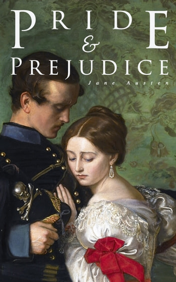

When we read a classic literature, or even just literature, we may learn words and phrases that may help us express ourselves more accurately when in a conversation, and in writing. We can also entertain ourselves with the different kinds of stories that may make us cry, laugh, or feel empathy for the characters. One of my favorite part of reading is that it can take us back in time, or even take us into the future, and experience what the people of different eras go through, to feel a little bit of their hardships and joys.
Literary Works
1001 Arabian Nights
1001 Arabian Nights is a collection of stories from the Middle East and South Asia, compiled over many centuries. The stories are framed by the tale of Scheherazade, a young woman who marries the cruel king Shahryar, who has vowed to kill a new wife every night. To save herself, Scheherazade tells the king a story every night, but leaves it unfinished until the next night. The king becomes so curious about the stories that he postpones her execution. Thus, Scheherazade tells him 1001 stories, ranging from adventure and romance to comedy and fantasy, until he falls in love with her and spares her life.
The stories are full of adventures, full of genies, flying carpets, hidden treasures and other fantasies that can be a fun read for children. I also realized that there are dark sides in the story that may not be suitable for kids, these details also may only be noticed by an adult mind. The stories were told by Scheherazade, a clever who had to entertain a cruel king with her tales every night, or else he would kill her in the morning. She had to keep him interested and curious, so she would always end her stories with a cliffhanger. She was literally saving her life with her words., but I also wonder how she felt about living in constant fear and suspense. Did she ever hope for a happy ending? Did she ever fall in love with the king? Did she ever run out of stories? We may never know.
Pride and Prejudice

Pride and Prejudice is a story about a bunch of snobs who judge each other by their wealth, manners, and looks. The main characters are Elizabeth Bennet, a smart and independent young woman, and Mr. Darcy, a rich and handsome but arrogant man. They hate each other at first sight, but then they fall in love after a series of misunderstandings, insults, and scandals. Along the way, they have to deal with Elizabeth's crazy family, Darcy's relatives, and a charming but pretentious soldier named Wickham. The novel ends with Elizabeth and Darcy getting married and living happily ever after, while their friends and siblings also find love and happiness.
The story of Elizabeth Bennet and Mr. Darcy is full of wit, romance and social commentary. I enjoyed how the author showed the characters with their good and bad attributes, and how they overcame their pride and prejudice to find true love. I liked how the author made fun of the manners and morals of the 19th century English society, especially the weirdness of the marriage market. The book made me laugh and cry at the same time. It is a classic that deserves to be read by everyone who appreciates good literature.
King Grisly Beard
King Grisly Beard is a fairy tale about a spoiled princess who rejects all her suitors because she thinks they are not good enough for her. She mocks a king with a long beard and calls him King Grisly Beard. Her father, the king, is angry and decides to marry her off to the first beggar who comes along. The beggar turns out to be King Grisly Beard in disguise, and he takes her to his poor hut where she has to work hard and suffer many hardships. She learns to appreciate the simple life and becomes humble and kind. At the end, King Grisly Beard reveals his true identity and forgives her for her pride. They live happily ever after.
I think this story is funny because it shows how the princess gets what she deserves for being so vain and cruel. She has to suffer a lot of hardships and humiliations before she realizes her mistake. The story also has some humorous moments, such as when the princess tries to play the fiddle and breaks it, or when she has to sell pottery and gets chased by a bull. The story also has a happy ending, which makes it enjoyable to read.
Alice's Adventures in Wonderland
Alice's Adventures in Wonderland is a fun book by Lewis Carroll. It tells the story of Alice, a curious girl who falls down a rabbit hole and enters a magical world full of strange and colorful characters. She meets a talking rabbit, a grinning cat, a smoking caterpillar, a mad hatter, a queen of hearts, and many more. Along the way, she faces many challenges and puzzles, such as changing her size, playing croquet with animals, and attending a very odd tea party. She also learns some lessons about logic, language, and identity. The book is full of humor, wordplay, and imagination, and it has brought joy to all ages for over 150 years.
Lewis Carroll uses humor, satire, and wordplay to create a fun engaging story that also criticizes the Victorian society and culture. He mocks the rules, norms, and values of his time by showing how absurd and illogical they are in Wonderland. He also plays with language and logic, creating puns, riddles, paradoxes, and nonsense poems that challenge the reader's understanding and interpretation. He invites the reader to join Alice in her adventure and to question their own assumptions and beliefs about reality and meaning.
The Adventures of Huckleberry Finn
The Adventures of Huckleberry Finn is a novel by Mark Twain that tells the story of Huck Finn, a young boy who runs away from his abusive father and his boring life with the Widow Douglas. He meets Jim, a slave who has also run away, and they become friends as they travel down the Mississippi River on a raft. They have many adventures and meet many people, some good and some bad. They also have to deal with the duke and the king, two conmen who join them and cause trouble. The novel explores themes of race, freedom, friendship, and morality in South America.
The Great Gatsby
The Great Gatsby is a novel about a guy named Jay Gatsby who throws wild parties in his huge mansion and tries to win back his ex-girlfriend Daisy, who is married to a jerk named Tom. Nick, the narrator, is Daisy's cousin and Gatsby's neighbor, and he gets involved in their drama. Gatsby is super rich but nobody knows how he made his money. He also lies about his past and pretends to be an Oxford man. Daisy is a flapper who likes money and nice things. Tom is a cheater who has a mistress named Myrtle, who lives in a dump with her husband George. One day, Gatsby and Daisy have a secret rendezvous at Nick's house, and then they all go to New York for some reason. There, Tom and Gatsby have a showdown over Daisy, and Daisy accidentally runs over Myrtle with Gatsby's car. George thinks Gatsby killed Myrtle, so he shoots him and then himself. Nick is sad and disillusioned, and he decides to move back to the Midwest.
The Great Gatsby is a powerful and timeless story that reminds me of the importance of being true to myself and living authentically. It also warns me of the dangers of losing sight of what really matters in life, and becoming corrupted by greed and selfishness. I enjoyed reading this novel, and I would recommend it to anyone who likes a good drama with a touch of humor.
The Little Prince
The Little Prince is a story about a pilot who meets a young boy in the desert. The boy, who calls himself the little prince, comes from a tiny planet where he lives with a beautiful but selfish rose. He left his planet to explore the universe and learn new things. Along the way, he met different kinds of grown-ups who were very silly and narrow-minded. He also made friends with a fox who taught him that what is essential is invisible to the eye and that one must be responsible for those one loves. The pilot and the little prince share their stories and become good friends, but the little prince misses his rose and decides to go back to his planet with the help of a snake.